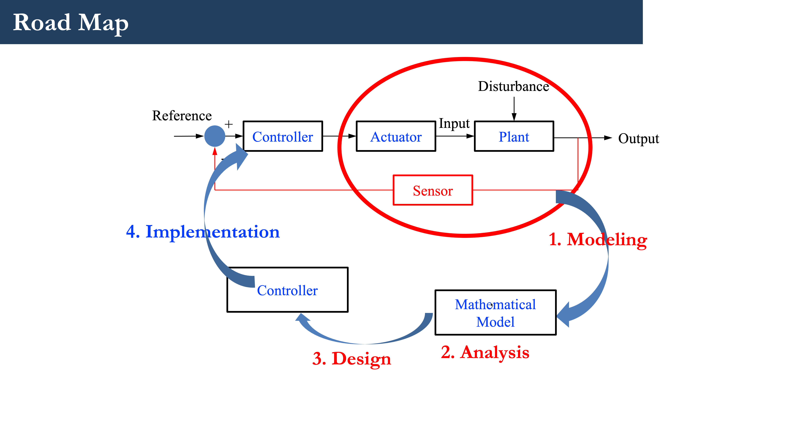

ENGR 5263G: Advanced Control
Course Description
This course builds upon the knowledge students have gained in a first control course to cover more materials in advanced control systems. Topics covered will include: a. State variables and state space models: Relations between state space models and the transfer-function models (controllable and observable canonical forms, and diagonal form), Jordan form, solutions of linear state equations, transition matrix. b. Controllability and observability: Definition and criteria, state feedback and output feedback, pole assignment via state feedback, design of servo-controlled systems. c. State estimation and observer: Observer state-variable feedback control. d. Multi-input multi-output (MIMO) systems: Pole assignment via state feedback. Introduction to Linear quadratic regulator (LQR), intelligent control and model predictive control.
| Course Outline: | Course Outline |
| Reference Books: | Norman S. Nise, Control Systems Engineering, 8th Edition, Wiley, 2019. Link |
| Clarence W. de Silva, Mechatronics: A Foundation Course, CRC Press, 2010. Link | |
| Katsuhiko Ogata, Modern Control Engineering, 5th Edition, Pearson, 2009. Link | |
| Final Report Template | Template |
| A Sample Report from a Previous Student: | Sample |
Important Notes:
| Lectures | Tuesdays | Tuesdays: 2:10 pm to 5:00 pm |
| Midterm Exam | November 7th, 2023 | In-class |
| Project Proposal | October 2nd, 2023 | by 5:00 pm |
| Proposal Presentation | October 3rd, 2023 | In-class |
| Final Presentation | Arranged in the last class(es) of the semester | (depending on the number of the students) |
| Final Report | December 8th, 2023 | by 5:00pm |
Course Notes
| Item | Title | Material | |
|---|---|---|---|
| Lecture 1 (Sept. 5) | Course Overview and Introduction | Slides | |
| Lecture 2 (Sept. 12) | Review of Classic Control Theory | Slides | |
| Lecture 3 (Sept. 19) | State Space Modeling | Slides | Notes |
| Lecture 4 (Sept. 26) | Linear Graph | Slides | Notes |
Proposal Submission (Oct. 2) |
by 5:00 pm |
through email |
|
Proposal Presentation (Oct. 3) |
in class |
10-minute presentation |
|
| Lecture 5 (Oct. 17) | Solution to State-Sapce Model and Stability | Slides | Notes |
| Lecture 6 (Oct. 24) | Controllability and Observability | Slides | Notes |
| Lecture 7 (Oct. 31) | Observer and Observer-based Control | Slides | Notes |
Midterm Exam (Nov. 7) |
3 hour in-class exam |
open book/note exam |
Sample |
| Lecture 8 (Nov. 14) | Linear Quadratic regulator and Kalman Filter | ||
| Lecture 9 (Nov. 21) | Other Controller: Model Predictive Control, Intelligent Control | ||
Final Presentation (Nov. 28) |
in-class |
15 minute presentation |
Homework
| Homework 1 | Homework 1 Solution |
| Homework 2 | Homework 2 Solution |
| Homework 3 | Homework 3 Solution |
| Homework 4 | Homework 4 Solution |
| Homework 5 | Homework 5 Solution |